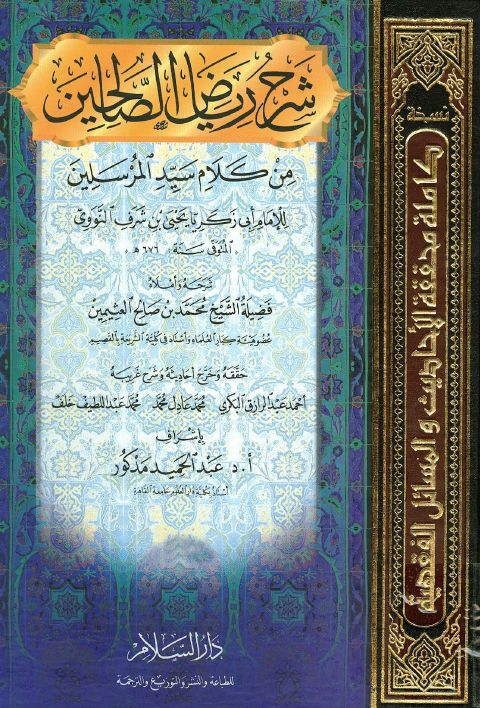
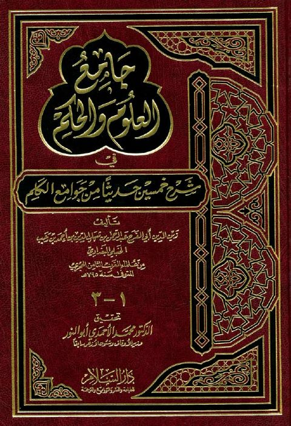
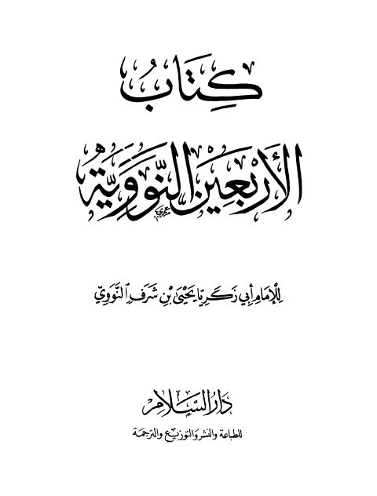
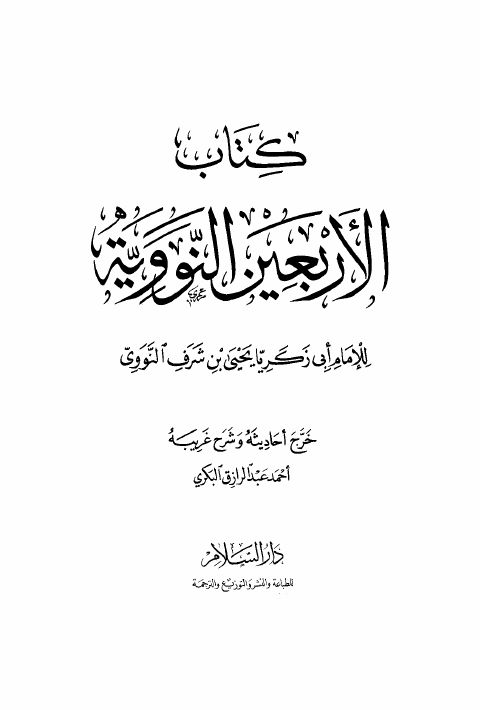
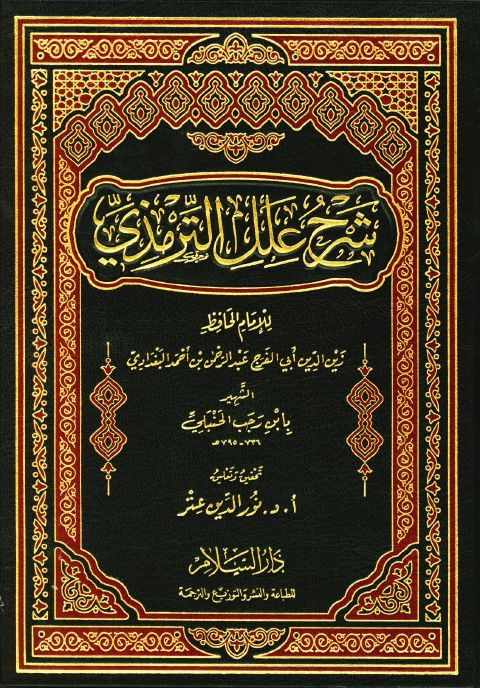

دار السلام
Publisher
Resources
 فتح الباري بشرح صحيح البخاري قابل للبحث والنسخ- ط دار السلام
فتح الباري بشرح صحيح البخاري قابل للبحث والنسخ- ط دار السلام
أحمد بن علي بن حجر العسقلاني
فتح الباري بشرح صحيح البخاري قابل للبحث والنسخ- ط دار السلام
فتح الباري بشرح صحيح البخاري قابل للبحث والنسخ- ط دار السلام
أحمد بن علي بن حجر العسقلاني

شرح رياض الصالحين للإمام يحيى بن شرف النووي شرح رياض الصالحين للإمام يحيى بن شرف النووي محمد بن صالح العثيمين
جامع العلوم والحكم في شرح خمسين حديثًا من جوامع الكلم- ط دار السلام جامع العلوم والحكم في شرح خمسين حديثًا من جوامع الكلم- ط دار السلام عبد الرحمن البغدادي بن رجب الحنبلي
كتاب الأربعين النووية كتاب الأربعين النووية يحيى بن شرف النووي
كتاب الأربعين النووية- ط4 كتاب الأربعين النووية- ط4 يحيى بن شرف النووي
شرح علل الترمذي شرح علل الترمذي عبد الرحمن البغدادي بن رجب الحنبلي